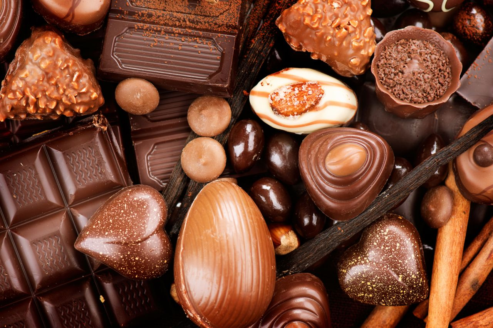
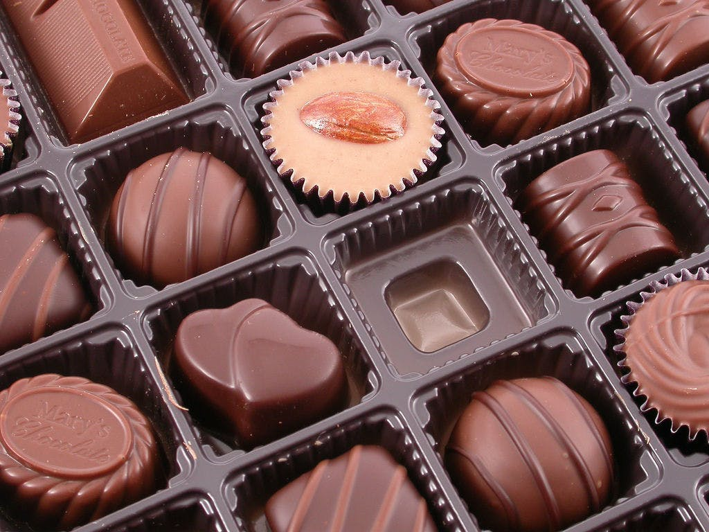
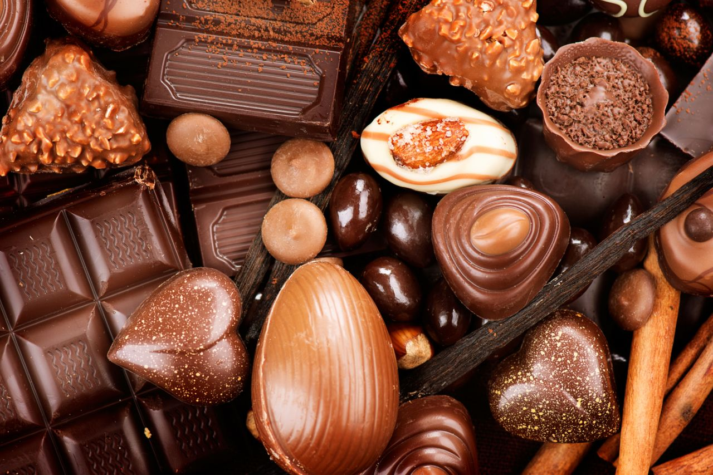
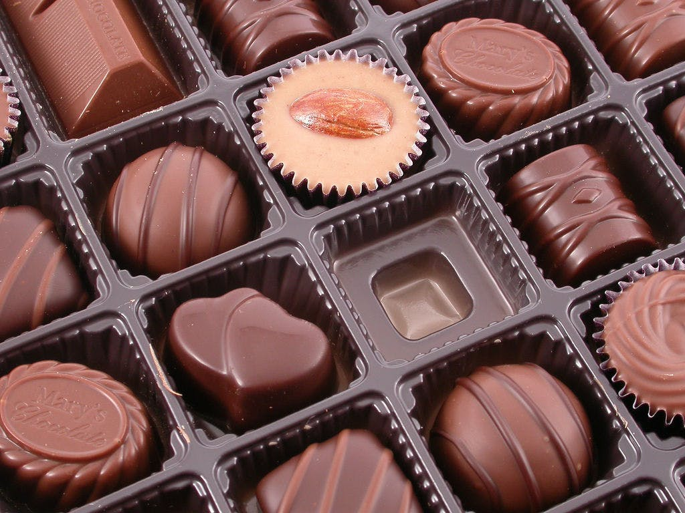
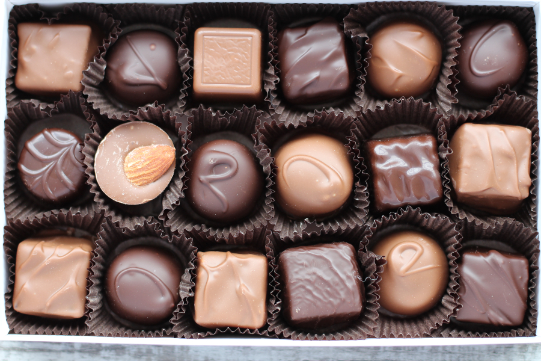
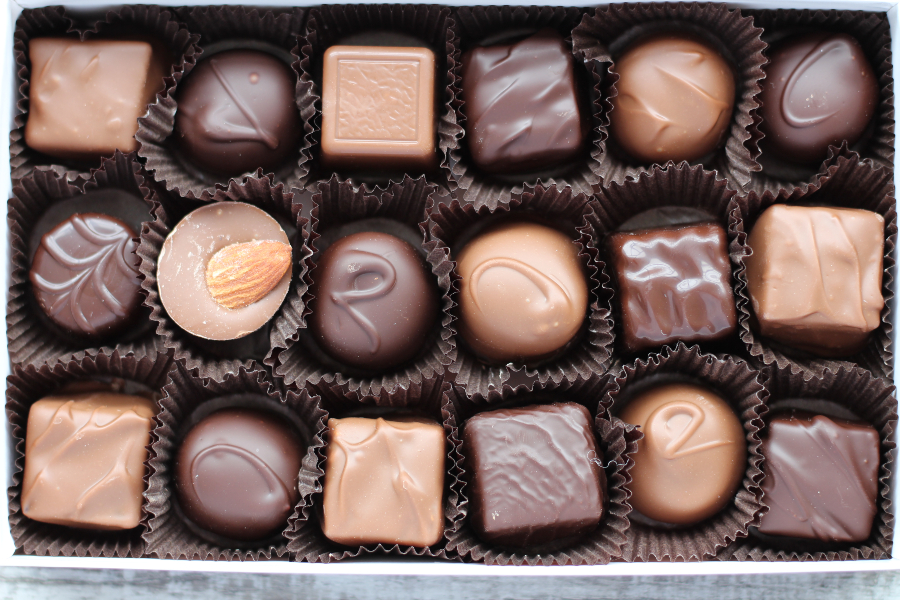

Discover the Enchantment of Chocolate Explosion
In an ancient forest filled with mystery and magic lies the secret of Chocolate Explosion, a renowned confectionery renowned for crafting chocolates that transcend mere taste to evoke profound experiences. Its origin traces back to The Maestro, a reclusive chocolatier who stumbled upon magical cacao beans infused with the energy of a violet thunderstorm. Establishing a hidden atelier within the forest, The Maestro combined these enchanted beans with exotic spices and rare ingredients, creating chocolates of unparalleled flavor and mystical properties.
Word of Chocolate Explosion's extraordinary chocolates spread far and wide, attracting adventurous souls from distant lands. Finding the atelier required courage and determination, yet those who succeeded were rewarded with chocolates that resonated deeply with their inner selves. The legend of Chocolate Explosion continued to grow, with The Maestro's agelessness adding to the mystique.
Even in the modern era, seekers still long for a taste of Chocolate Explosion's magic, though its atelier remains elusive. Nonetheless, its chocolates occasionally find their way into the world, appearing when needed most to offer a reminder that magic exists and that chocolate is more than a mere indulgence—it is a conduit for experiencing life's profound mysteries.
 



 
